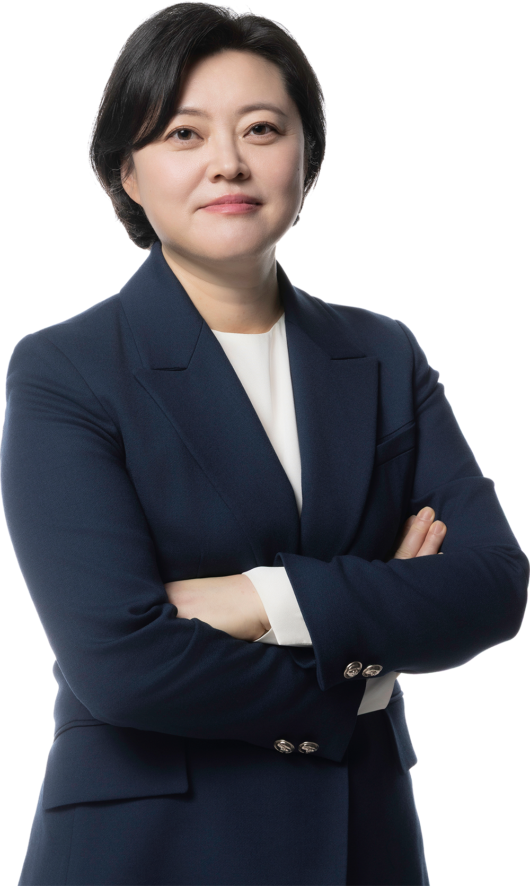

구성원

하주희 대표변호사
ylhjhee@law-yulip.co.kr학력
- 울산여자고등학교
- 고려대학교 법학과
- 고려대학교 법학과 대학원 석사과정 수료(행정법 전공)
경력
- 사법시험 48회
- 사법연수원 39기
- 서울특별시교육청 인사위원회 위원 (2012. 3. ~ 2015. 3.)
- 재단법인 금정굴인권평화재단 자문위원 (2013. 8.)
- 대한변호사협회 인권위원회 위원 (2013. 3. ~ 2015. 2.)
- 교육부 사학혁신위원회 위원 (2017. 12. ~ 2018. 8.)
- 성신여자대학교 대학평의원회 평의원 (2018. 2. ~ 2020. 2.)
- 한국 예술인복지재단 감사 (2018. 5. ~ 2022. 5.)
- 학교법인 충암학원 임시이사 (2018.2. ~ 2022. 2.)
- 학교법인 유신학원 임시이사 (2019. 5. ~ 2021. 5.)
- 교육부 법률지원단 (2019. 7. ~ 2021. 10.)
- 서울대학교병원 인권심의위원회 위원 (2018. 4. ~ 2022. 8.)
- 경기도 옴부즈만 (2021. 2. ~ 2022. 3.)
- 서울지방변호사회 조사위원회 위원 (2020. 4. ~ 2022. 6.)
- 재단법인 서울문화재단 인권경영위원회 위원 (2022. 9. ~ 2024. 9.)
- 학교법인 서림학원(장안대학교) 이사 (2021. 3. ~ 2024. 12.)
- 수원교육지원청 학교폭력 갈등조정 자문단 (2021. 4. ~ 2022. 2.)
- 영화진흥위원회 블랙리스트 피해회복 및 재발방지를 위한 특별위원회 위원 (2021. 12. ~ 2022. 12.)
- 경기도 기지촌 여성지원위원회 위원 (2021. 2. ~ 2023. 2.)
- 학교법인 신경학원 교원징계위원회 위원 (2021. 4. ~ 2024. 4.)
- 경기도수원교육지원청 화해중재단 중재위원 (2023. 4. ~ 2024. 3.)
- 경기공익활동 자문단 자문위원 (2022. 1. ~ 2023. 12.)
- 민주사회를 위한 변호사모임 사무총장 (2022. 5. ~ 2024. 5.)
- 국가경찰위원회 위원 (2020. 12. 15. ~ 2023. 12. 15.)
- 서울특별시교육청 징계심의원회 위원 (2022. 7. ~ 2025. 7.)
- 평택시의회 전문가 자문단 (2023. 12. ~ 2025. 11.)
현재
- 서울특별시교육청 감사자문위원
- 서울특별시교육소청심사위원회 위원
- 서울특별시교육청 징계심의위원회 위원
- 대한택견회 스포츠공정위원회 위원장
수상 및 논문
- 2025 한국인터넷기자상 사회공헌상
- 2023 대통령 표창
- 2021 수원교육지원청교육장 표창
- 『페미니즘 연구』, 기지촌 미군 위안부 국가배상 소송을 돌아보며, (사)한국여성연구소, 2023. 봄
- 『노동연구』, 공공기관 노동조합의 노동기본권 보장과 ILO 핵심협약의 사법적 이행 방안, 고려대학교 노동문제연구소, 2023. 6.
- 『비영리법인 공익성 및 투명성 제고를 위한 과제제도 개선방안』, 학교법인 세제상 혜택 및 사후관리에 관한 연구 – 사립대학의 법인세를 중심으로-, 한국조세재정연구원, 2021조세전문가 네트워크
- 「순직군인 형제자매 보상방안에 관한 연구」, 군사망사고진상규명위원회, 2020.